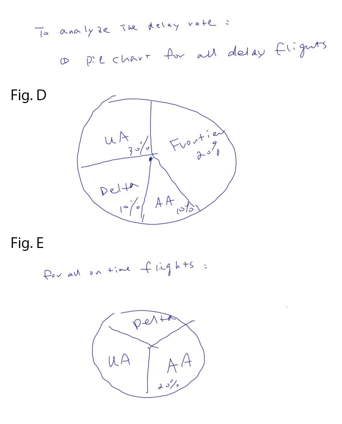

Zhenghan Li, li.zhenghan@wudtl.edu, 451907
Peiyun Xie, peiyun.xie@wustl.edu, 451179
Thomas Clifford, t.clifford@wustl.edu, 444248
We will meet weekly during class time. We will also meet at other times as the project requires. We will communicate over a text message group and email. We will use the github reposistory as well as email to collaborate on the code. We will have regular checkups to make sure everyone is contributing a fair amount to the project.
We chose this dataset because we all love travelling and delayed flights can inconvenience people’s travel plans. Additionally, flight delays can present a major problem for businesses that have important meetings. To limit flight cancellations and delays as much as possible, we want to visualize the flight delays and cancellations of major airlines and airports. This will give travelers and businesses a better idea of which airlines and airports to choose for their trips. Additionally, it will give users an idea of what sort of delays to expect on a certain date.
Data Visualization of Flight Delays with TableauThis author of this article makes several visualizations related to flight delays. His visualizations show the states with the most delays as well as the delays’ causes. He also has a line graph showing delays by month. These are interesting trends, but different ones than the ones that we are looking at.
Flight View
This tool allows you to search for your flight and see if it had a delay. It doesn’t provide a good visualization though and it doesn’t really satisfy the objectives of our project.
Average Flight Arrival Delay
This tool shows the average delay for each airport in the US on a map. It lets you filter by a specific airport. It also has other charts including a chart showing average delay by month. This visualization has more of the components that we want in our visualization than the other one. However, it doesn’t deal with specific time or airline information like we want to.
The questions we want are visualization to answer are the following. Which airline should a person take given an origin, a destination, and a date to minimize delay? What time of day would minimize delays at a specific date, given an origin and destination? What delay time can a person expect given the airports and a date?
One question we decided to deemphasize is, which airport should a person choose to minimize delay? We decided that maybe we will consider this if we have extra time, but normally a person knows their origin airport. This would only help in the case where there were multiple origin airports to choose from within reasonable distance.
We used data from this Kaggle database. The files were .csv files so we were able to just use the build in csv function in d3 to extract the data. For the actual flight data, we split it up into 365 files, one file for each day of the year. We were able to do this because the original dataset has a month and day column. This was helpful to our project because we only have to process smaller files depending on the date selected rather than processing an enormous file of all flight data. The java file used to generate these 365 files from the original flight data is in our github repository. Another way that we sped up our data parsing was by selected 10,000 random points to use for generating the visualizations rather than the whole dataset. For the final project, we may increase this number to a size that is larger, but not large enough where it would slow down our website noticeably. Our dataset was pretty clean and did not require cleanup to be used in our visualization.
Initially we explored the different airport locations, by plotting them on a map of the US. We were also able to explore through the console to see how then delays varied across different locations. We plan to further explore this as our project continues and implement the planned visuals to see how delay varies across different locations and airlines. We did realize when we were plotting these locations that airport location is a lot less flexible than time or airline, so we decided that it made the most sense to treat airport location as static to a certain extent when thinking about which visualizations to display.
Below are the original designs. We have decided to focus on designs A, B, C, F, G, and H because these seemed to be the most important to achieve are objectives of letting travelers choose airports and airlines as well as for travelers to know what length of delays to expect. The other designs we will implement based on time constraints if we decide that they properly embody the objectives of our project. The pie charts are a good idea, but we would need a way to account for the differences in number of flights from each airline out of each airport.

So far we have aggregated the following data into our repository: data representing the abbreviations of different airports, data representing the locations of different airports, and data representing US continental flights from 2015. We also have displayed a visualization to geographically represent flights on a US continental map. We found this source helpful in making this map. The visualization shows all airports in our database as black points on the map. This visualization allows you to choose a specific date as well as a specific departure and arrival city. Right now, it shows animations of planes traveling between the two relevant airports. For the continental US this works as expected. For Hawaii and Alaska, the visualization works a little bit different because these states are generally shown on the map in a place different than their actual relative geographic location. The two visualizations currently displayed correspond to figures A and B in the Design Evolution section. This can be seen in Figure I below.
This current iteration of the visualization lays the fundamental direction of our project. The date and origin and destination cities currently chosen are the same parameters that determine which data points we are choosing to be incorporated into the other visualizations that are to be created. From what we have now, we will add the other visualization components that we outline here.
This project is still a work in progress so we still have much to learn about the data. Our design plan includes producing visualizations that will explore the objectives though.